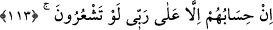
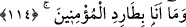
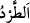
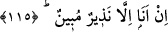

yaptıklarını(n iç yüzünü)” ihlâsla mı, nifakla mı yaptıklarını “bilmem.”
Bu benim vazifem de değildir. Ben ancak zâhirî hallerine îtibar eder, hükümleri
bunlara göre veririm. İç hallerini araştırmak, kalplerini yarıp bakmak benim görevim
değildir.
Kâşifî der ki: “Kavmimin yaptıkları ve işlediklerinden haberim yok. Onlar niçin öyle
yaparlar ve bana îman etmezler; bunun sebebini bilmem.”
113. Onların hesabı ancak Rabbime aittir. Bir düşünseniz!
“Onların hesabı” içlerindeki durumlara göre onları muhâsebe etmek “ancak
Rabbime aittir.” Çünkü gizli hallere muttalî olan ancak O’dur. Meşhur bir hadîste şöyle
buyrulmuştur: “Onlar Allah’tan başka ilah olmadığına şâhidlik ettikleri zaman
benden kanlarını ve mallarını korumuş olurlar. İslâm’ın gerektirdiği haklar ise
bunların dışındadır. Onların gizli hallerinin hesabı Allah’a âiddir.”[17]
Süfyan Sevrî (r.h.) der ki: “Biz yaşayanları hesaba çekmez, ölüler hakkında da
hüküm vermeyiz.”
“Bir düşünseniz!” Keşke şuur ve idrak ehlinden olsaydınız, bunu bilirdiniz. Fakat siz
câhilsiniz, bilmediğiniz şeyleri söylüyorsunuz.
114. Ben iman eden kimseleri kovacak değilim.
“
” hafife almak maksadıyla rahatsız etmek ve uzaklaştırmak demektir.
Bu cümle, onların “Sana düşük seviyeli kimseler tâbi olup dururken, biz sana iman
eder miyiz hiç!” şeklindeki sözlerinin vehmettirdiği, onların kovulmasını talep
etmelerine ve kendilerinin iman etmesini buna bağlamalarına cevaptır. Çünkü onlar,
düşük kimselere tabi olmanın kendilerinin iman etmesine mâni olduğunu belirtmişlerdir.
İbn Atâ (r.h.) der ki. “Ben Rabb’ine yönelen kimseden yüz çevirecek değilim.”
115. Ben ancak apaçık bir uyarıcıyım.
Yâni ben sadece mükellefleri uyarmak, onları küfür ve günahlardan sakındırmak için
gönderilmiş bir elçiyim/peygamberim. Bu mükellefler, toplumun ister ileri gelen